Record your screen.
Speak your mind.
Bolo is a single-file browser screen recorder. Captions, on-device vision that describes and answers questions about your recording, trim, annotations, blur-in-export — all running on your machine. Your recordings never leave your device.
No features match that search.
1First look
Open Bolo and you're looking at the recorder. The big black area on the left is the stage — your live preview during recording and the playback after. Everything else lives in the right sidebar.
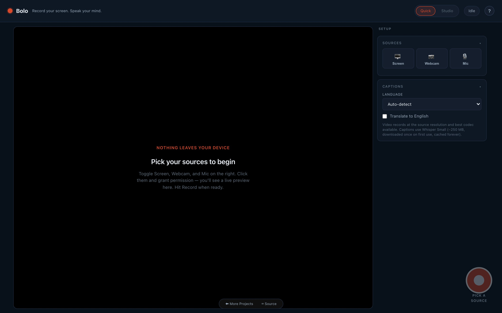
The header chip pair at the top right is the mode toggle. Bolo opens in Quick mode by default — the simplest possible recorder. Click Studio to unlock Looks, AI insights, annotations, and burn-in export.
2Quick vs Studio
Two modes, one toggle:
- Quick — Sources, Captions, Record, Download. A clean screen recorder. Good for first-timers and one-shot captures.
- Studio — adds Looks (background framing), Follow-cursor zoom, AI insights, post-record annotations, burn-in export, and aspect-ratio presets. The full power-user surface.
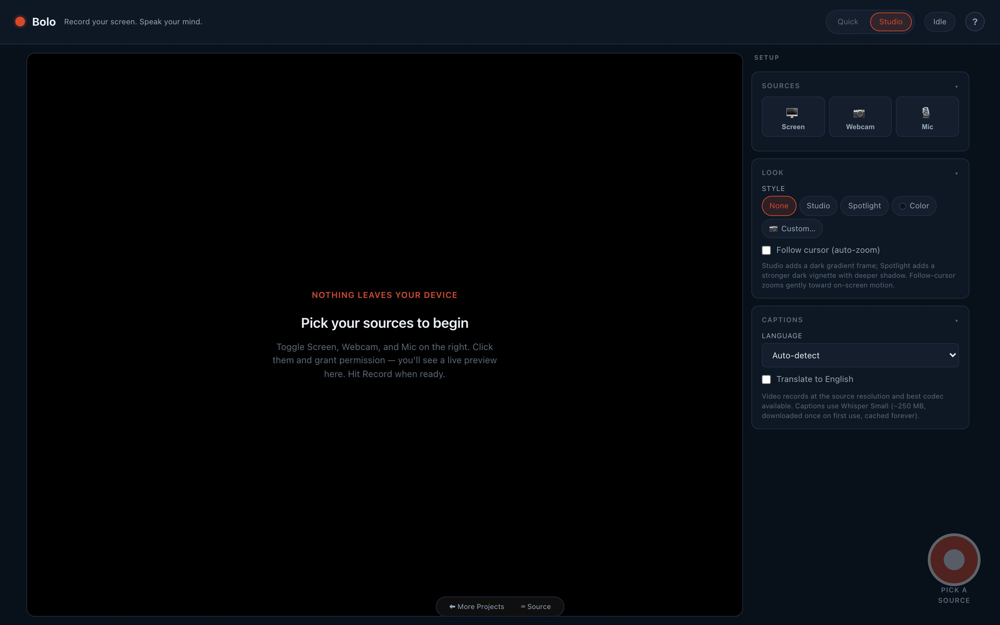
Your choice persists across sessions per device.
3Pick your sources
The Sources panel has three toggles:
- Screen — picks a tab, window, or whole screen via the browser's native picker.
- Webcam — your camera, optionally drag-positioned and shaped (square / rounded / circle).
- Mic — your microphone, with a live level meter.
You can mix any combination. Screen + webcam composites the webcam as a draggable picture-in-picture overlay during recording.
4Looks & follow-cursor
Studio mode only. The Look panel applies framing to your recording — gradient background, padding, rounded corners, drop shadow. Five presets:
- None — raw screen capture.
- Studio — dark navy gradient, subtle padding, soft shadow.
- Spotlight — dramatic dark vignette, larger padding, deeper shadow.
- Color — opens a colour picker for any solid hex.
- Custom… — opens a file picker for any background image (cover-fit).
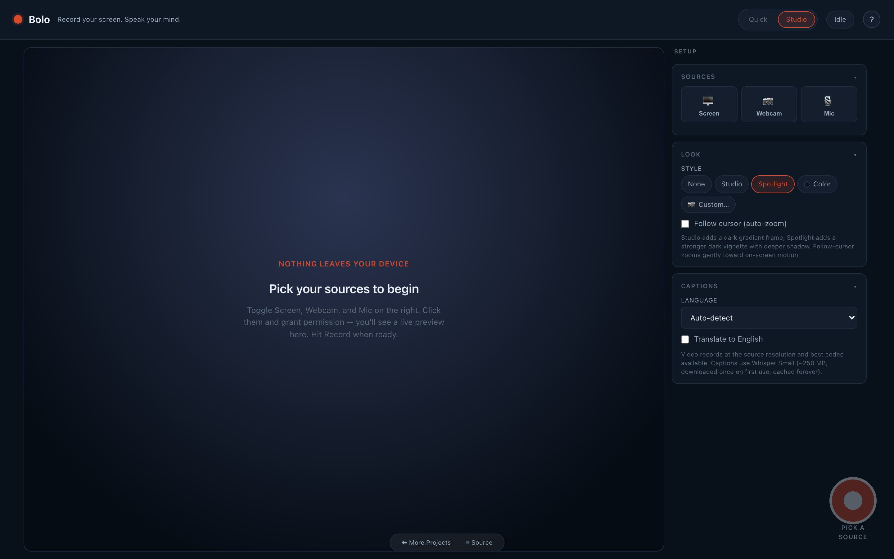
Follow cursor (auto-zoom) — toggle below the Look chips. When on, the canvas gently zooms 1.4× toward whatever's moving on screen. Bolo infers cursor position from frame-to-frame pixel deltas (the browser can't read it directly the way native screen recorders can).
5Record
Hit the big red REC button at the bottom right (or press ⌘⇧B). Bolo counts down 3 · 2 · 1, then starts.
- Recording another tab? Bolo opens a tiny always-on-top Document Picture-in-Picture window with timer + pause + stop, so you can control recording from anywhere.
- No Document PiP support? Bolo falls back to a draggable floating control bar in the page.
- Pause / resume any time with ⌘⇧..
- Cancel and discard with Esc.
Stop with the FAB or ⌘⇧B again. You land back on the stage with the playback ready.
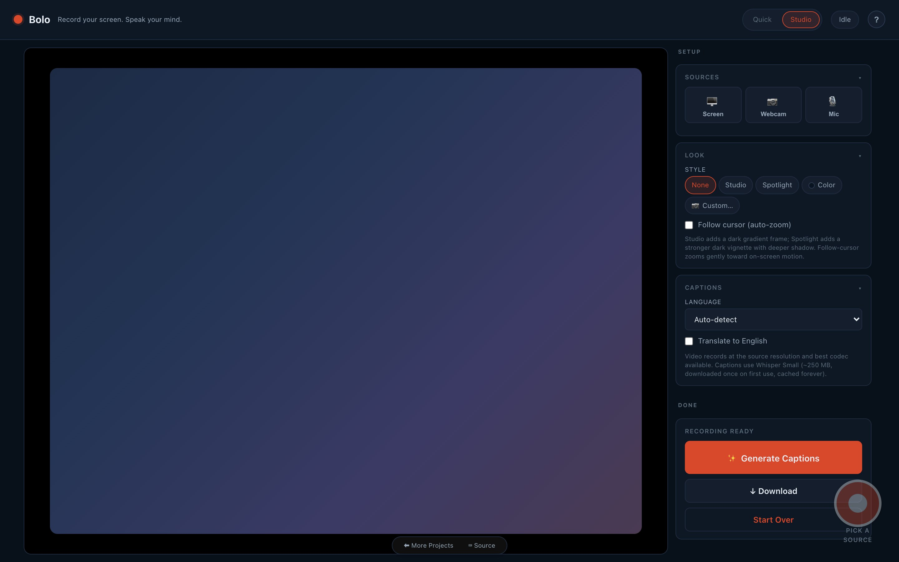
6Captions (Whisper)
Click ✨ Generate Captions in the Recording Ready panel. Bolo runs Whisper Small (Xenova/whisper-small via Transformers.js) locally in a Web Worker.
- First run downloads ~250 MB of model weights, then cached forever in your browser's Cache Storage.
- 15 languages with auto-detect. Pick one in the Captions panel pre-record, or leave it on Auto.
- Translate to English toggle for non-English speakers.
- Bolo pre-transcribes silently the moment you stop recording, so by the time you click the button it's usually instant (⚡ Captions ready).
Each transcript segment is editable in place — click any line to fix typos. Timestamps are clickable to seek the playback.
7AI insights
Studio mode only. Once you have a transcript, click ✨ Generate title, summary, chapters in the AI Insights panel. Bolo runs Qwen 2.5 0.5B Instruct on WebGPU (via Transformers.js v4) and produces:
- A short title (4–10 words).
- A one-paragraph summary.
- Clickable chapter markers grounded in the transcript timestamps.
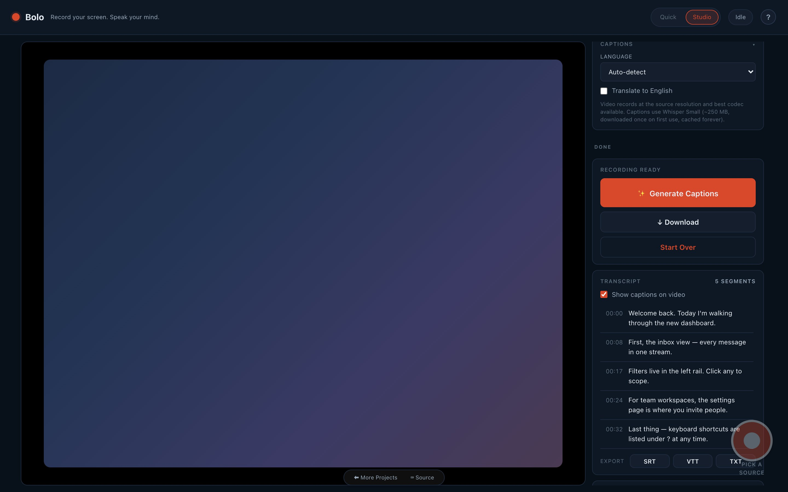
First run downloads ~350 MB of model weights, cached forever. The insights are stored on the recording's history entry so they survive reloads.
8Visual timeline
Studio mode only. Bolo can watch your recording back. Click 👁 Describe key moments in the AI Insights panel — it samples key frames and describes what's on screen at each, producing a clickable timeline.
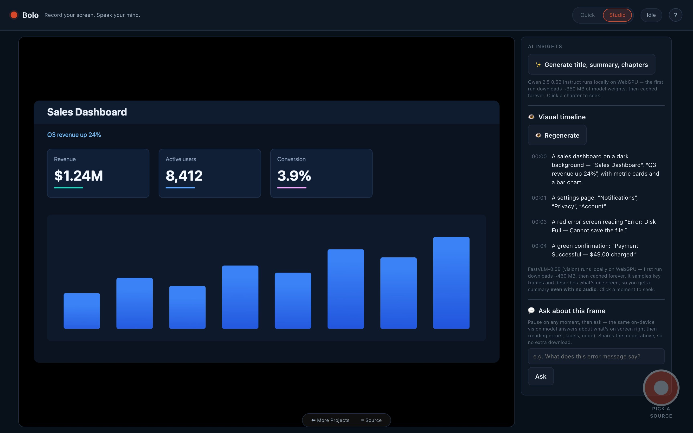
- Runs FastVLM-0.5B, a small vision-language model, on WebGPU (Transformers.js v4). First run downloads ~450 MB, then cached forever.
- Works even with no audio — a silent screen capture still gets a usable summary, where captions have nothing to transcribe.
- Reads on-screen text well — dashboards, error dialogs, terminals, labels.
9Ask about a frame
Studio mode only. Pause the playback on any moment, type a question in 💬 Ask about this frame, and the same on-device vision model answers about what's on screen right then.
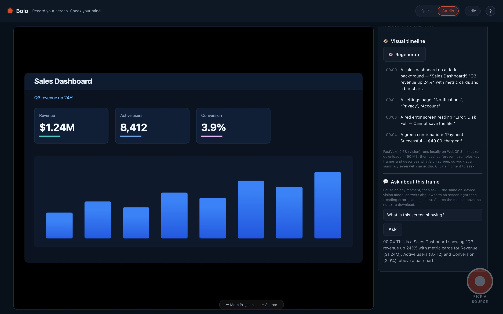
Great for reading an error off a recording, checking what a dashboard said, or pulling text out of a frame — "what does this error say?", "what's the revenue number?". It shares the visual-timeline model, so there's no extra download.
10Trim
Cut the recording down to the part that matters — entirely in the browser. Scrub the playback to where the clip should start and click ⊣ Start = playhead, scrub to the end and click End = playhead ⊢, then ✂ Trim to selection.
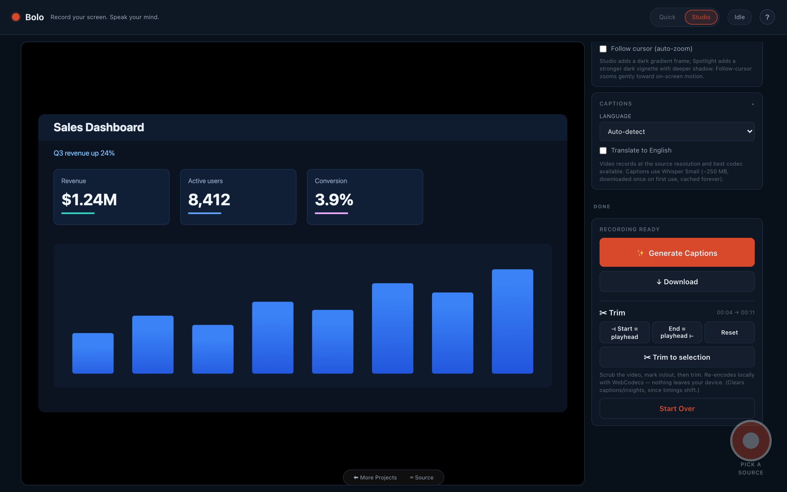
Trim re-encodes locally via mediabunny (a pure-WebCodecs media toolkit) — frame-accurate, usually a second or two, and nothing leaves your device. It replaces the recording in place and updates the gallery entry.
11Annotations & blur
Studio mode only. The Annotations panel adds four draw tools you can use directly on the playback:
- ↗ Arrow — click + drag from tail to head.
- ▭ Box — click + drag to outline a region.
- 🅰 Text — click on the playback, type a short label.
- 🌫 Blur — click + drag a region. Pixels under the rect get redacted in the export (and live-blurred during playback via
backdrop-filter).
Each annotation is visible for 3 seconds from the moment you draw it. Pause the playback to set the exact starting frame.
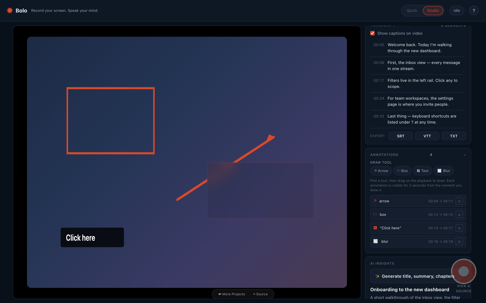
Annotations persist on the recording's history entry. They never leak between recordings.
12Export
Bolo has two export paths:
↓ Download (instant)
The original captured WebM/MP4 plus a sidecar .srt if you have captions. VLC, IINA, mpv all auto-load the SRT. Native, no re-encoding.
🎬 Export with overlays burned in
Studio mode only. Re-encodes the recording with captions and/or annotations baked into the pixels. Useful when the destination doesn't understand sidecar SRT — YouTube, Twitter, embedded players, social media.
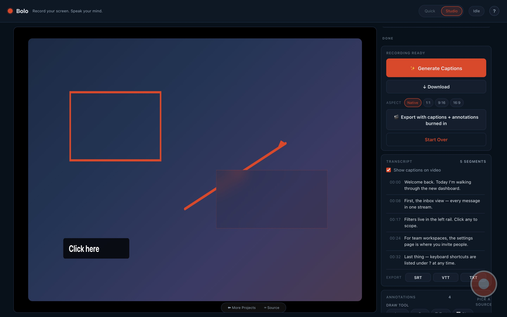
- Native keeps the source resolution.
- 1:1 exports 1080 × 1080 (Instagram feed, square cards).
- 9:16 exports 1080 × 1920 (Instagram Reels, TikTok, vertical social).
- 16:9 exports 1920 × 1080 (YouTube, embeds, presentations).
Non-native aspects use cover semantics — the source is center-cropped to fill the target frame. The output filename gains a -1x1 / -9x16 / -16x9 suffix.
requestVideoFrameCallback. Roughly real-time — a 5-minute recording takes ~5 minutes to bake. The progress bar shows the playhead so you know how far along it is.
13Gallery
The Recent recordings panel at the bottom of the sidebar lists everything you've captured this session and prior — Bolo persists recordings into your browser's OPFS (Origin Private File System).
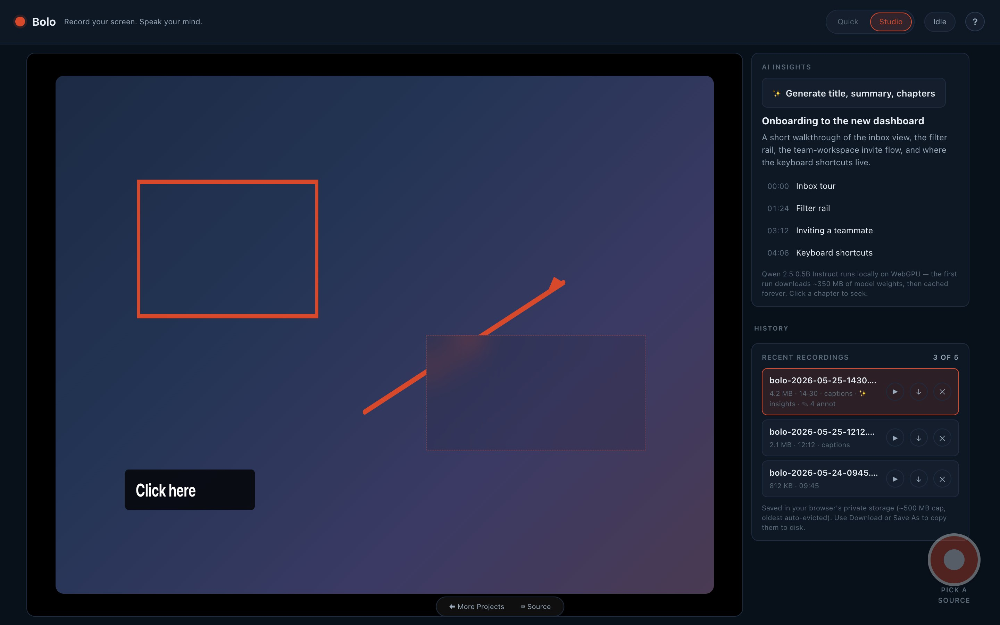
- ▶ opens the recording for playback / re-export.
- ↓ downloads it without re-opening.
- ✕ deletes it from the gallery.
Badges at a glance:
- · captions — has a transcript.
- · ✨ insights — has AI title / summary / chapters.
- · ✎ N annot — has N annotations.
14Keyboard shortcuts
| Shortcut | Action |
|---|---|
| ⌘⇧B / Ctrl⇧B | Start / stop recording |
| ⌘⇧. / Ctrl⇧. | Pause / resume |
| Esc | Cancel and discard the current recording |
⌘⇧R would conflict with the browser's hard-reload shortcut, so Bolo uses B for "Bolo".
15Privacy
Everything stays on your device. There is no backend. There never will be. Bolo's only network calls are the one-time downloads of its open models and libraries — Whisper (~250 MB) and Qwen (~350 MB) from the Hugging Face CDN, FastVLM (~450 MB) for the visual timeline and frame Q&A, and the mediabunny trim toolkit from jsDelivr — all of which land in your browser's Cache Storage, accessible only to this site, and work offline once cached. Close the tab and your recordings stay in your private OPFS, visible only to you, only on this device. Use Download to copy anything to disk.
No telemetry. No analytics. No accounts. No share links. No cloud upload. The transcripts, the AI insights, the visual timeline, the frame answers, the annotations, the blur regions, the trims — all generated locally and stored locally. Your recordings never leave your device.